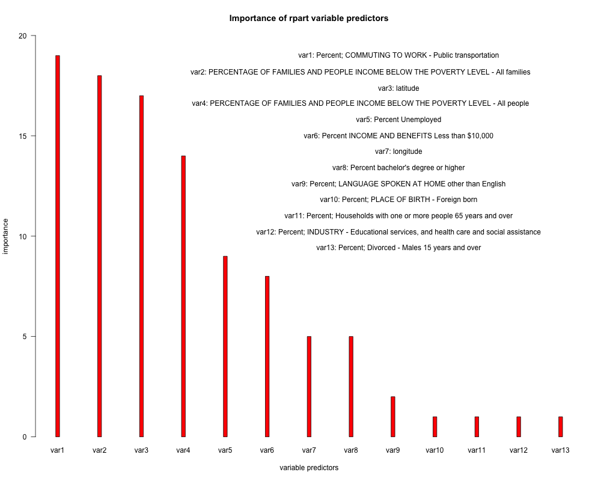

Group Name: WeTheDragons
Group members:
Zhou, Qi
Huang, Hao
Shao, Shiyun
Lin, Wei
Xue, Peng
From knn predictor
This plot shows the prediction errors comparing to the true 2012 election result with different k values of k-nearest neighbors model. The knn model was trained by data from 2004 election result and other resources. It shows that higher k value gives greater error rates.
From rpart predictor

This plot compares the importance of the 13 variables we choose in the rpart predictor. It was surprised to see that var1: the percentage of public transportation for commuting to work is the most important variable in this predictor. After researching, transportation policy is really a big deal affecting people's decision on election. GOP's transportation bill would eviscerate mass transit funding(http://thehill.com/blogs/congress-blog/economy-a-budget/208937-rep-jerrold-nadler-d-ny), this source gives a proof how transportation is a very important aspect in election.
Prediction result model comparison rpart vs. knn
rpart model
Legend:
green: correct prediction, grey: incorrect prediction, white: no data
From rpart model prediction result, we colored US counties on the map.
knn model with k=10
Legend:
green: correct prediction, grey: incorrect prediction, white: no data
From knn model with k=10 prediction result, we colored US counties on the map.
Conclusion: These two models have very closed error rate: around 13% error rate,
so they can be both considered as good predition.
Fancy Plot
This plot shows the change in votes bewteen 2004 election and 2012 election for DEM(red) and GOP(blue). First, the lenght of arrows indicate the proportional to the vote shift from the 2004 and the 2012 election. We calculate the proportional for both GOP and DEM in each county, and choosing the greater one in absolute value as our proportional showing on the graph. Then, the upward direction show that the proportional to the vote is increase, and the downward direction show the propotional to the vote is decrease. Moreover, the angle of arrows changes by its proportional. The vertical upward direction shows the maximum increasing in the propotional, and the vertical downward direction shows the maximum decreasing in the proportional. Finally, the red color indicates DEM party, and the blue color indicates GOP party. Then, we can easily figure out how each county change their votes from 2004 to 2012.